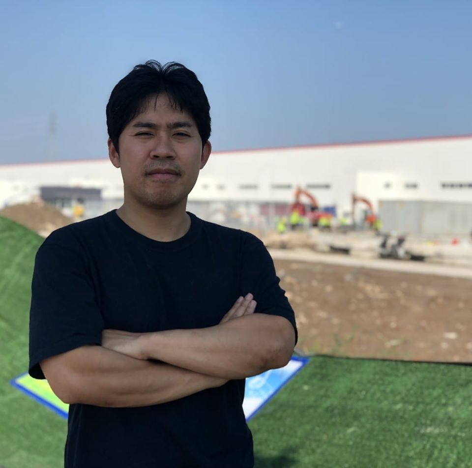
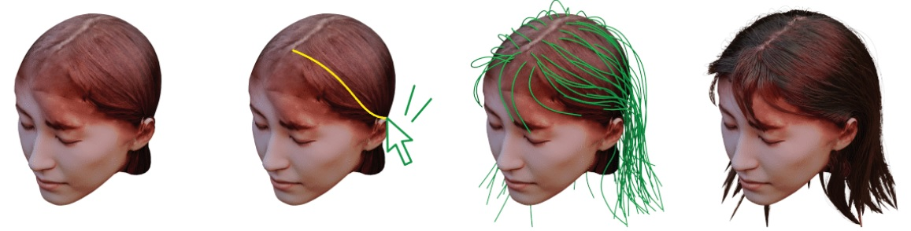
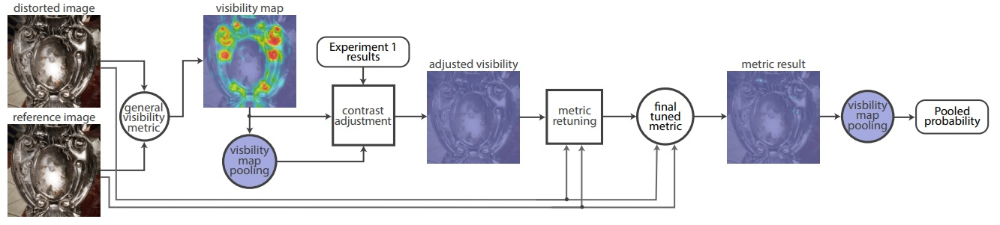
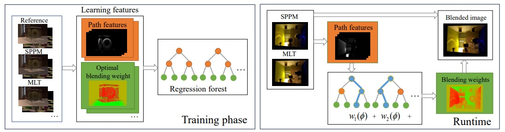
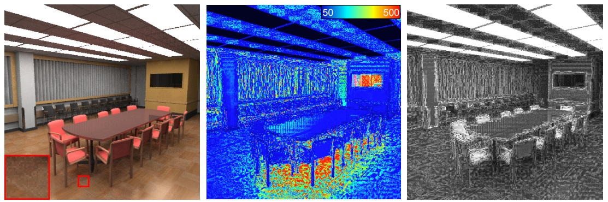
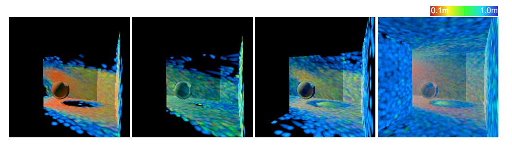
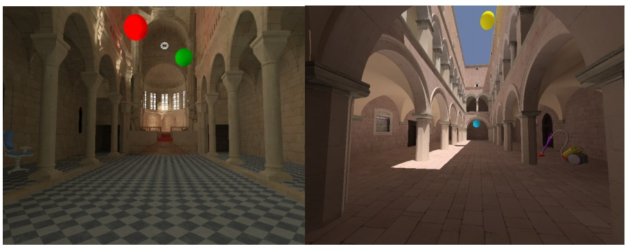

Shinichi Kinuwaki
email: ShinichiKinuwaki [at] gmail.com

About me
I'm Shinichi Kinuwaki. I am intesreted in production pipeline optimization, photogrammetry, human perception, and differential rendering.
Publications
EnergyHair: Sketch-Based Interactive Guide Hair Design Using Physics-Inspired Energy
Yuanwei Zhang, Shinichi Kinwaki, Nobuyuki Umetani.
Graphics Interface 2022
(project page)(PDF)(slide)(YouTube)

Selecting texture resolution using a task-specific visibility metric
Krzysztof Wolski, Daniele Giunchi, Shinichi Kinuwaki, Piotr Didyk, Karol Myszkowski, Anthony Steed and Rafał K. Mantiuk.
Computer Graphics Forum (Pacific Graphics), 38(7), 2019
(doi)(project page)(dataset)(PDF)(slide)

Supervised Learning of How to Blend Light Transport Simulations
Hisanari Otsu, Shinichi Kinuwaki, and Toshiya Hachisuka.
The Proceedings of the MCQMC 2016
(doi)(project page)(PDF)

Render2MPEG: A Perception-based Framework Towards Integrating Rendering and Video Compression
Robert Herzog, Shinichi Kinuwaki, Karol Myszkowski, and Hans-Peter Seidel.
Computer Graphics Forum (Eurographics), 27(2) 2008
(doi)(PDF)(slide)(video)

Global Illumination using Photon Ray Splatting
Robert Herzog, Vlastimil Havran, Shinichi Kinuwaki, Karol Myszkowski, and Hans-Peter Seidel.
Computer Graphics Forum (Eurographics), 26, 2007
(doi)(PDF)(slide)

Temporally Coherent Irradiance Caching for High Quality Animation Rendering
Miloslaw Smyk, Shin-ichi Kinuwaki, Roman Durikovic, and Karol Myszkowski.
Computer Graphics Forum (Eurographics), 24, 2005
(doi)(project page)(PDF)(slide)

Patent
2016 US20160231773A1 Accessory and information processing system
2016 US20160231773A1 Electronic apparatus
Grant
2007 Information – technology Promotion Agency (IPA) Exploratory Software Project, Japan, 3,000,000 JPY